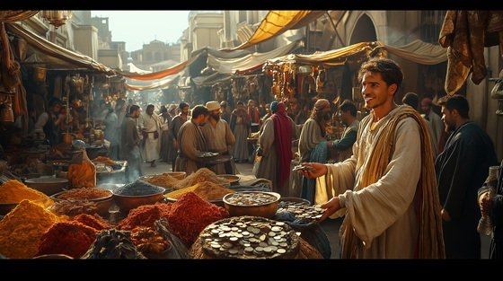

"The Trader’s Deception" tells the story of Sinbad encountering a cunning merchant whose silver-tongued promises hide dangerous traps. This track embodies the tension of human deceit, portraying how wisdom and vigilance can overcome greed and treachery. It’s a tale of trust tested and survival through wit, highlighting the subtler dangers Sinbad faces beyond storms and monsters.
The Trader’s Deception
A merchant smiles with silver tongue,
Promises riches yet unsung.
Gilded coins, a hidden snare,
Beneath the gold, a poisoned glare.
Deals are made with whispered lies,
Trust betrayed beneath the skies.
Beneath the mask, the danger waits,
Fate is twisted by cunning fates.
The trader’s deception, the web is spun,
A path of shadows where none can run.
Greed and cunning clash in the night,
Only the wary can survive the fight.
Spices and silks, a dazzling show,
Yet secrets hide where none can know.
Coins exchanged, a handshake cold,
Stories of betrayal silently told.
Sinbad’s eyes pierce through the scheme,
Unmasking lies beneath the gleam.
Every word conceals a trap,
Every gift hides a venomous gap.
The trader’s deception, the web is spun,
A path of shadows where none can run.
Greed and cunning clash in the night,
Only the wary can survive the fight.
In the market’s heart, the danger lies,
Whispers of betrayal, unseen spies.
But wit and courage chart the way,
Through every trick, through shades of gray.
The merchant flees, the truth prevails,
Sinbad sails forth, the legend hails.
Deception thrives where trust is blind,
Yet clever hearts will never bind.
Through webs of lies and hidden schemes,
The sailor navigates through dreams.
The trader’s deception, the web is spun,
A path of shadows where none can run.
Greed and cunning clash in the night,
Only the wary can survive the fight.
The market clears, the danger gone,
Yet lessons linger at the break of dawn.
Sinbad sails on, his mind astute,
Survivor of the cunning and the brute.